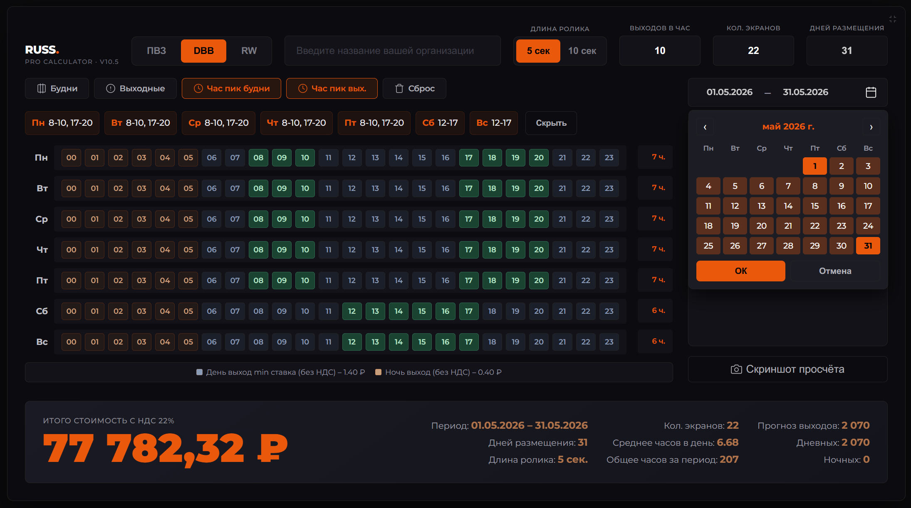

→
Pro
Профессиональный инструмент.
Для тех, кто работает с Digital всерьёз.
Для тех, кто работает с Digital всерьёз.
- 5 цифровых форматов RUSS на выбор
- Тарифы день / ночь
- Ролики 5 и 10 секунд — разная стоимость
- Гибкое расписание: будни / выходные / отдельные дни недели
- Период кампании: точные даты по календарю

Pro · Preview
СКОРО.
Готовим Pro-версию калькулятора
Следите за обновлениями